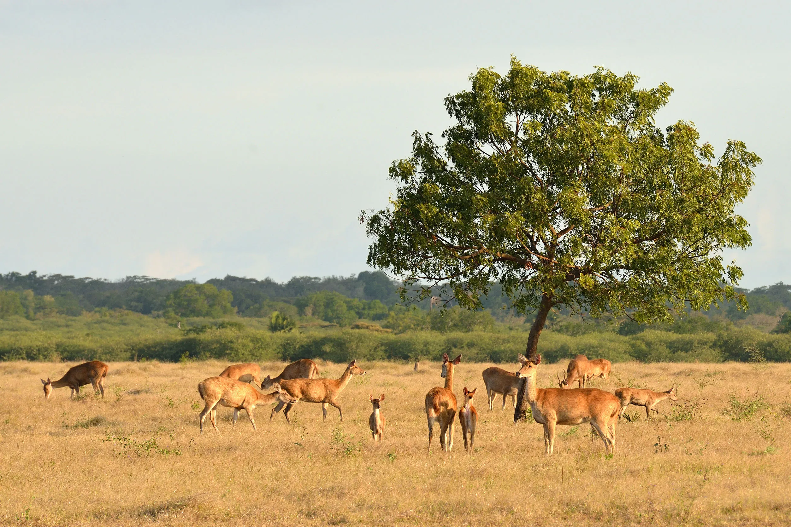
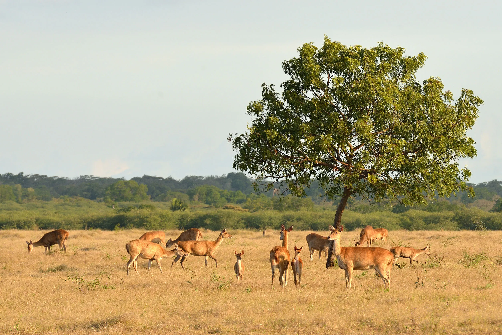

Taman Nasional Baluran - "Little Africa" di Jawa
Taman Nasional Baluran terletak di Kabupaten Situbondo, Jawa Timur, dan dikenal sebagai "Little Africa" di Indonesia. Taman nasional ini memiliki lanskap yang unik dengan sabana luas, hutan mangrove, pantai, dan gunung. Baluran menjadi rumah bagi berbagai satwa liar seperti banteng, rusa, burung merak, dan monyet ekor panjang.
 

Aktivitas yang Bisa Dilakukan di Taman Nasional Baluran
Menjelajahi sabana Bekol untuk melihat satwa liar di habitat alaminya. Mengunjungi Pantai Bama untuk menikmati keindahan pantai dan snorkeling. Menjelajahi hutan mangrove yang asri dan unik. Berfoto dengan latar belakang Gunung Baluran yang megah. Mengikuti tur malam untuk merasakan suasana hutan yang berbeda dan melihat satwa aktif di malam hari.
Keunikan Taman Nasional Baluran
Taman Nasional Baluran memiliki sabana terluas di Pulau Jawa yang menyerupai pemandangan Afrika. Tempat ini menjadi surga bagi pecinta alam dan fotografi karena pemandangannya yang spektakuler. Keanekaragaman hayati yang kaya, termasuk flora dan fauna endemik, menjadikan Baluran sebagai destinasi wisata edukasi dan petualangan.
Tips Berkunjung ke Taman Nasional Baluran
Kunjungi saat pagi atau sore hari untuk melihat lebih banyak satwa liar yang aktif. Gunakan kendaraan pribadi atau sewa untuk menjelajahi taman nasional ini. Bawa air minum dan makanan ringan karena fasilitas di dalam taman cukup terbatas. Jangan lupa membawa kamera untuk mengabadikan momen-momen indah. Hormati alam dan satwa liar dengan menjaga jarak aman serta tidak memberi makan satwa.